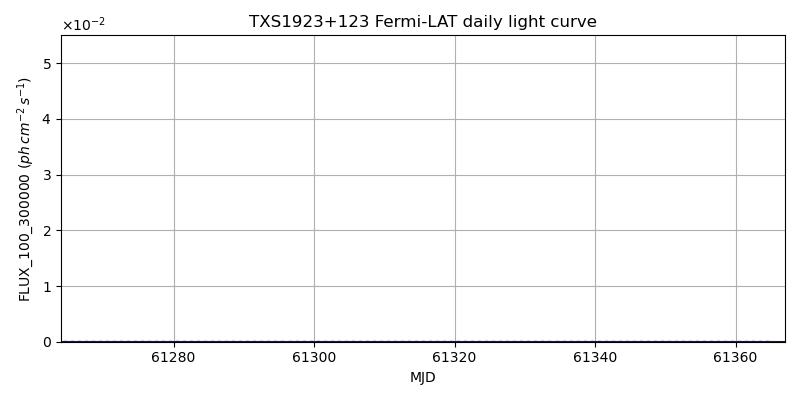
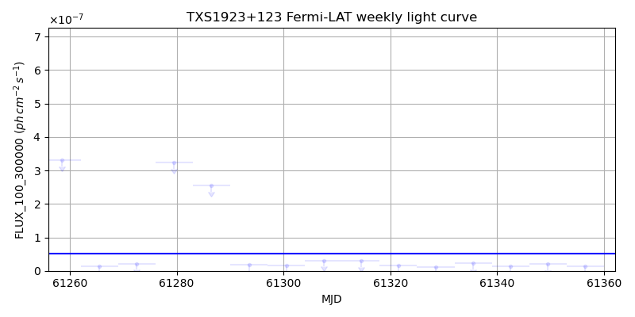
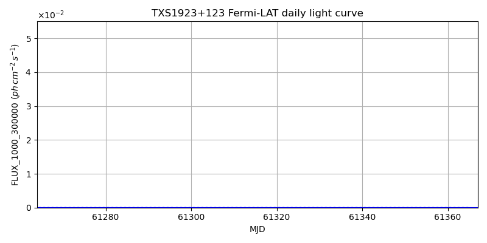

LAT Lightcurve site: https://fermi.gsfc.nasa.gov/ssc/data/access/lat/msl_lc/source/TXS_1923p123
NED: Query
Time of last update of this page: UT: 2026-11-21 16:26 (MJD: 61365.685)
| Property | Value |
|---|---|
| R.A. | 19:25:40.80 |
| Dec. | 12:27:39.6 |
| z | 0.000 |
| 3FGL SpectrumType | PowerLaw |
| 3FGL PL Index | 2.61 |
| 3FGL Flux_100_300000 | 5.09e-08 1 / (s cm2) |
| 3FGL Flux_1000_300000 | 1.26e-09 1 / (s cm2) |
| 3FGL Flux >200 GeV | 2.54e-13 1 / (s cm2) |
| 3FGL Extrap. Crab >200 GeV | 0.00 |
| 3FGL Flux After EBL Absorption >200GeV | 2.54e-13 1 / (s cm2) |
| 3FGL EBL Crab Fraction >200GeV | 0.00 |

| MJD | dMJD | Flux | dFlux | Frac3FGL | FracCrab>200GeV | EBLFracCrab>200GeV |
|---|---|---|---|---|---|---|
| 61360.50 | 0.50 | 1.55e-06 | 0.00e+00 | 0.00 | 0.00 | 0.00 |
| 61361.50 | 0.50 | 8.68e-07 | 0.00e+00 | 0.00 | 0.00 | 0.00 |
| 61362.50 | 0.50 | 9.62e-08 | 0.00e+00 | 0.00 | 0.00 | 0.00 |
| 61363.50 | 0.50 | 6.88e-07 | 0.00e+00 | 0.00 | 0.00 | 0.00 |
| 61364.50 | 0.50 | 9.29e-07 | 0.00e+00 | 0.00 | 0.00 | 0.00 |

| MJD | dMJD | Flux | dFlux | Frac3FGL | FracCrab>200GeV | EBLFracCrab>200GeV |
|---|---|---|---|---|---|---|
| 61328.50 | 3.50 | 1.22e-08 | 0.00e+00 | 0.00 | 0.00 | 0.00 |
| 61335.50 | 3.50 | 2.34e-08 | 0.00e+00 | 0.00 | 0.00 | 0.00 |
| 61342.50 | 3.50 | 1.28e-08 | 0.00e+00 | 0.00 | 0.00 | 0.00 |
| 61349.50 | 3.50 | 1.96e-08 | 0.00e+00 | 0.00 | 0.00 | 0.00 |
| 61356.50 | 3.50 | 1.30e-08 | 0.00e+00 | 0.00 | 0.00 | 0.00 |

| MJD | dMJD | Flux | dFlux | Frac3FGL | FracCrab>200GeV | EBLFracCrab>200GeV |
|---|---|---|---|---|---|---|
| 61360.50 | 0.50 | 2.58e-08 | 0.00e+00 | 0.00 | 0.00 | 0.00 |
| 61361.50 | 0.50 | 2.59e-08 | 0.00e+00 | 0.00 | 0.00 | 0.00 |
| 61362.50 | 0.50 | 1.38e-08 | 0.00e+00 | 0.00 | 0.00 | 0.00 |
| 61363.50 | 0.50 | 2.35e-08 | 0.00e+00 | 0.00 | 0.00 | 0.00 |
| 61364.50 | 0.50 | 1.65e-08 | 0.00e+00 | 0.00 | 0.00 | 0.00 |
| MJD | dMJD | Flux | dFlux | Frac3FGL | FracCrab>200GeV | EBLFracCrab>200GeV |
|---|---|---|---|---|---|---|
| 61328.50 | 3.50 | 4.23e-09 | 0.00e+00 | 0.00 | 0.00 | 0.00 |
| 61335.50 | 3.50 | 7.34e-09 | 0.00e+00 | 0.00 | 0.00 | 0.00 |
| 61342.50 | 3.50 | 3.52e-09 | 0.00e+00 | 0.00 | 0.00 | 0.00 |
| 61349.50 | 3.50 | 3.61e-09 | 0.00e+00 | 0.00 | 0.00 | 0.00 |
| 61356.50 | 3.50 | 4.06e-09 | 0.00e+00 | 0.00 | 0.00 | 0.00 |
--------------------------------------------------------- Using user-supplied coords: 19:25:40.80 12:27:39.6 2000 --------------------------------------------------------- FLWO UT night of: 2026-11-22 Local Sid. @ Midnight: 03:41 Sunset (-15.0) (local, UT): 18:32 01:32 Sunrise (-15.0) (local, UT): 05:48 12:48 Moonrise (local, UT): Moonset (local, UT): 04:47 11:47 Moon phase: 0.92 --------------------------------------------------------- AzTime LSID UT Obj_el Obj_az Mn_el Mn_az Sep. --------------------------------------------------------- 18:32 22:12 01:32 47.4 252.8 41.7 100.8 87.5 19:02 22:42 02:02 41.2 258.3 47.9 105.9 87.6 19:32 23:12 02:32 34.9 263.1 53.8 112.1 87.8 20:02 23:43 03:02 28.6 267.4 59.5 119.9 87.9 20:32 00:13 03:32 22.2 271.4 64.7 130.4 88.1 21:02 00:43 04:02 15.8 275.2 69.1 145.0 88.2 21:32 01:13 04:32 9.5 279.0 71.9 164.7 88.3 22:02 01:43 05:02 3.3 282.8 72.4 188.0 88.5 22:32 02:13 05:32 -1.9 286.7 70.5 209.7 88.6 23:02 02:43 06:02 -9.1 290.9 66.7 226.3 88.7 23:32 03:13 06:32 -15.0 295.4 61.8 238.3 88.9 00:02 03:43 07:02 -20.7 300.3 56.3 247.1 89.0 00:32 04:13 07:32 -26.0 305.8 50.5 253.9 89.2 01:02 04:43 08:02 -31.0 311.9 44.5 259.5 89.3 01:32 05:13 08:32 -35.5 318.9 38.4 264.2 89.5 02:02 05:43 09:02 -39.4 326.7 32.2 268.4 89.7 02:32 06:14 09:32 -42.5 335.6 26.1 272.3 89.9 03:02 06:44 10:02 -44.6 345.3 20.0 276.0 90.1 03:32 07:14 10:32 -45.7 355.6 13.9 279.7 90.3 04:02 07:44 11:02 -45.6 6.1 8.0 283.3 90.6 04:32 08:14 11:32 -44.4 16.3 2.2 287.1 90.8 05:02 08:44 12:02 -42.1 25.9 -2.4 291.0 91.1 05:32 09:14 12:32 -38.8 34.6 -9.4 295.1 91.4 05:48 09:29 12:48 -36.9 38.6 -12.2 297.3 91.5 --------------------------------------------------------- Dark hours >55 deg.: 0.00